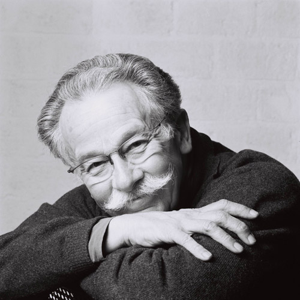
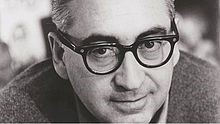
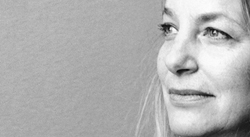
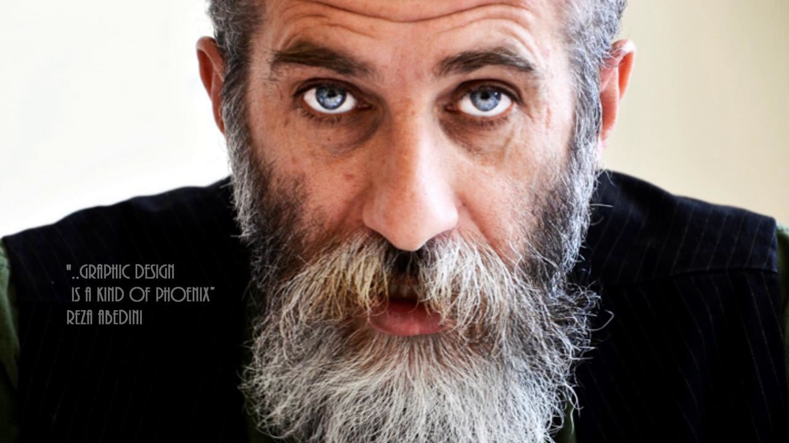

Dick Bruna
Dick Bruna (b. August 23, 1927 in Utrecht) is a Dutch author, artist, illustrator and graphic designer. Bruna is best known for his children's books which he authored and illustrated, now numbering over 200. His best known creation is Miffy (Nijntje in the original Dutch), a small rabbit drawn with heavy graphic lines, simple shapes and primary colors. Other recurring characters include Boris the little boy bear and Barbara his girlfriend, Poppy the kind pig lady and Snuffy the dog. Additionally, Bruna has also created stories for characters such as Lottie, Farmer John, and Hettie Hedgehog. Aside from his prolific catalog of children's books, Bruna also illustrated and designed book covers, posters and promotional materials for his father's publishing company A.W. Bruna and Zoon. His most popular designs graced the covers of the Zwarte Beertjes series of books. Among his designs those for Simenon's Maigret are quite famous. They are typified by graphic silhouettes of a pipe on various backgrounds.
Biography
Dick Bruna's father eventually became the largest publisher in Netherlands. His company, A.W. Bruna & Zoon, had a bookstand at virtually every one of the country's abundant railway stations. His father's intentions were for Bruna to follow in his footsteps, but Bruna had different plans. Bruna's brother eventually took over the business, but Dick Bruna always remained a close collaborator. In 1955, while on holiday with his wife Irene and their child, he saw a rabbit hopping around their house and later made attempts to draw it, thereby creating Miffy. "Miffy" is the English-language name, whereas "Nijntje" (pronounced nein-che) is the original Dutch name of the rabbit, stemming from "konijntje" which is the diminutive form of "konijn" (rabbit). Over the years Bruna has illustrated over 2,000 covers and over 100 posters for the family business, A.W. Bruna & Zoon. His most recognized illustrations were for the Zwarte Beertjes (English: little black bears) series of books, including The Saint, James Bond, Simenon, and Shakespeare. In July 2014 he announced his retirement; the rights to the Miffy character will not be sold.
Bibliography (as children's author) (not complete)
- 1953 The Apple
- 1959 The Apple, The Bird, Kitty Nell, Tilly and Tessa
- 1964 The School, The Sailor
- 1966 Cinderella, Hop-o'-my-thumb, Red Riding Hood, Snow White
- 1969 Snuffy, Snuffy and the Fire, I can Read, I Can Read More
- 1970 Miffy Goes Flying, Miffy's Birthday
- 1975 Flower Book, Miffy at the Playground, Miffy in the Hospital
- 1979 Birthday Book for UNICEF, Miffy's Dream
- 1980 Poppy Pig Goes to Market, When I Grow up, I Can Do Sums, I Can Do More Sums, Children's Hemophilia Book
- 1988 Miffy Goes to Stay, Grandpa and Grandma Bunny, Stop at the Kerb! [sic], Iris- A Book Without Words (revised edition, 2000)
- 1995 Hettie the Hedgehog, Moo Says the Cow, Miffy in the Tent
- 1996 What We're Going to Be, The Dolly's Hair is Red, Boris Bear's Boat, Dear Grandma Bunny
- 2001 Miffy and the Ghost, Miffy and the Fairy
- 2004 A Song for Poppy Pig, Miffy's Garden
- 2007 Queen Miffy
Zim&Zou
Saul Bass
Saul Bass was born on May 8, 1920, in the Bronx, New York, United States, to Eastern European Jewish immigrant parents. He graduated from James Monroe High School in the Bronx and studied part-time at the Art Students League in Manhattan until attending night classes with György Kepes at Brooklyn College. He began his time in Hollywood in the 1940s, designing print advertisements for films including Champion (1949), Death of a Salesman (1951) and The Moon Is Blue (1953), directed by Otto Preminger. His next collaboration with Preminger was to design a film poster for his 1954 film Carmen Jones. Preminger was so impressed with Bass's work that he asked him to produce the title sequence as well. This was when Bass first saw the opportunity to create a title sequence which would ultimately enhance the experience of the audience and contribute to the mood and the theme of the movie within the opening moments. Bass was one of the first to realize the creative potential of the opening and closing credits of a movie.
Film title sequences
Bass became widely known in the film industry after creating the title sequence for Otto Preminger's The Man with the Golden Arm (1955). The subject of the film was a jazz musician's struggle to overcome his heroin addiction, a taboo subject in the mid-1950s. Bass decided to create an innovative title sequence to match the film's controversial subject. He chose the arm as the central image, as it is a strong image relating to heroin addiction. The titles featured an animated, white on black paper cut-out arm of a heroin addict. As he hoped, it caused quite a sensation. For Alfred Hitchcock, Bass provided effective, memorable title sequences, inventing a new type of kinetic typography, for North by Northwest (1959), Vertigo (1958), working with John Whitney, and Psycho (1960). It was this kind of innovative, revolutionary work that made Bass a revered graphic designer. Before the advent of Bass’s title sequences in the 1950s, titles were generally static, separate from the movie, and it was common for them to be projected onto the cinema curtains, the curtains only being raised right before the first scene of the movie. Bass once described his main goal for his title sequences as being to ‘’try to reach for a simple, visual phrase that tells you what the picture is all about and evokes the essence of the story”. Another philosophy that Bass described as influencing his title sequences was the goal of getting the audience to see familiar parts of their world in an unfamiliar way. Examples of this or what he described as “making the ordinary extraordinary” can be seen in Walk on the Wild Side (1962) where an ordinary cat becomes a mysterious prowling predator, and in Nine Hours to Rama (1963) where the interior workings of a clock become an expansive new landscape. In the 1950s, Saul Bass used a variety of techniques, from cut-out animation for Anatomy of a Murder (1958), to fully animated mini-movies such as the epilogue for Around the World in 80 Days (1956), and live-action sequences. In 1955, Elaine Makatura came to work with Bass in his Los Angeles office. By 1960, with the opening to Spartacus, she was directing and producing title sequences, and in 1961 the two married, kicking off more than 40 years of close collaboration. After the birth of their children, Jennifer in 1964 and Jeffrey in 1967, they concentrated on their family, film directing, and title sequences. Saul and Elaine designed title sequences for more than 40 years, continuously experimenting with a variety of innovative techniques and effects, from Bunraku-style maneuvers in Spartacus (1960), live-action sequences in Walk On The Wild Side (1962), to time-lapse photography in The Age of Innocence (1993), and even chopped liver in Mr. Saturday Night (1992). Their live action opening title sequences often served as prologues to their films and transitioned seamlessly into their opening scenes. These “time before” title sequences either compress or expand time with startling results. The title sequence to Grand Prix (1966) portrays the moments before the opening race in Monte Carlo, the title sequence to The Big Country (1958) depicts the days it takes a stage coach to travel to a remote Western town, and the opening montage title sequence to The Victors (1963) chronicles the twenty seven years between World War I and the middle of World War II, where the film begins. From the mid-60s to the late 1980s, Saul and Elaine moved away from main titles to focus on filmmaking and their children. About this time away from title design, Saul said: “Elaine and I feel we are there to serve the film and to approach the task with a sense of responsibility. We saw a lot of pyrotechnics and fun and games and I suppose we lost interest. At the same time, an increasing number of directors now sought to open their own films in ambitious ways rather than hire someone else to do it. Whatever the reasons, the result was ‘Fade Out.’ We did not worry about it: we had too many other interesting projects to get on with. Equally, because we still loved the process of making titles, we were happy to take it up again when asked. ‘Fade In’…" In the 1980s, Saul and Elaine were rediscovered by James L. Brooks and Martin Scorsese who had grown up admiring their film work. For Scorsese, Saul and Elaine Bass created title sequences for Goodfellas 1990), Cape Fear (1991), The Age of Innocence(1993), and Casino (1995), their last title sequence. This later work with Martin Scorsese saw the Basses move away from the optical techniques that Saul had pioneered and move into the use of computerized effects. The Basses' title sequences featured new and innovative methods of production and startling graphic design. Screenwriter Nicholas Pileggi said of Saul and Elaine Bass, "You write a book of 300 to 400 pages and then you boil it down to a script of maybe 100 to 150 pages. Eventually you have the pleasure of seeing that the Basses have knocked you right out of the ballpark. They have boiled it down to four minutes flat." In some sense, all modern opening title sequences that introduce the mood or theme of a film can be seen as a legacy of the Basses' innovative work. In particular, though, title sequences for some recent movies and television series, especially those whose setting is during the 1960s, have purposely emulated the graphic style of Saul Bass's animated sequences from the 1950s. Some examples of title sequences that pay homage to Bass’s graphics and animated title sequences are Catch Me If You Can (2002), X-Men: First Class (2011), and the opening to the AMC series Mad Men.
Paula Scher
Paula Scher (born October 6, 1948, Washington D.C) is an American graphic designer, painter and art educator in design, and the first female principal at Pentagram, which she joined in 1991.
Education
Paula Scher studied at the Tyler School of Art, Elkins Park, Pennsylvania and earned a Bachelor of Fine Arts in 1970.
Career
Paula Scher moved to New York City and took her first job as a layout artist for Random House's children's book division. In 1972, she was hired by CBS Records to the advertising and promotions department. After two years, she left CBS Records to pursue a more creative endeavor at a competing label, Atlantic Records, where she became the art director, designing her first album covers. A year later Scher returned to CBS as an art director for the cover department.During her eight years at CBS Records, she is credited with designing as many as 150 album covers a year. Some of those iconic album cover designs are Boston (Boston), Eric Gale (Ginseng Woman), Leonard Bernstein (Poulenc Stranvinsky), Bob James (H), Bob James and Earl Klugh (One on One), Roger Dean and David Howells (The Ultimate Album Cover Album) and Jean-Pierre Rampal and Lily Laskin (Sakura: Japanese Melodies for Flute and Harp). In addition her designs were recognized with four Grammy nominations. She is also credited with reviving historical typefaces and design styles. She left Atlantic Records to work on her own in 1982. Scher developed a typographic solution based on Art deco and Russian constructivism, which incorporated outmoded typefaces into her work. The Russian constructivism had provided Scher inspiration for her typography; she didn’t copy the early constructivist style but used its vocabulary of form on her works. In 1984 she co-founded Koppel & Scher with editorial designer and fellow Tyler graduate Terry Koppel. During the seven years of their partnership, she produced identities, packaging, book jackets, and advertising, including the famous Swatch poster based on previous work by Swiss designer Herbert Matter. In 1991, after the studio suffered from the recession and Koppel took the position of Creative Director at Esquire magazine, Scher began consulting and joined Pentagram as a partner in the New York office. Since then, she has been a principal at the New Yorkoffice of the Pentagram design consultancy. In 1992, she became a design educator, teaching at the School of Visual Arts (SVA) in New York. She received more than 300 awards from international design associations as well as a series of prizes from the American Institute of Graphic Design (AIGA), The Type Directors Club (NY), New York Art Directors Club and the Package Design Council. She is a select member of Alliance Graphique Internationale (AGI) and her work is included in the collections of New York MoMA, the Library of Congress in Washington, DC, the Museum für Gestaltung, Zurich and the Centre Georges Pompidou". As an artist she is known for her large-scale paintings of maps, covered with dense hand-painted labeling and information. She has taught at the School of Visual Arts in New York for over two decades, along with positions at the Cooper Union, Yale University and the Tyler School of Art. Paula Scher has contributed to numerous issues of Print. Her first Print cover was with her friend Steven Heller. Together they created a parody issue in 1985, a genealogy chart of graphic design.
Juri Zaech

Reza Abedini
Reza Abedini, (Persian: رضا عابدینی , born 1967 in Tehran) is an Iranian graphic de signer and a professor of graphic design and visual culture at the American University of Beirut. Abedini is one of the most famous graphic designers in Iran because of his modern Persian typography. He combined modern and traditional themes in his unique style. His design influences include Aleksander Rodchenko, Ikko Tanaka, Sani'ol Molk Ghafari, Roman Cieslewicz and Mirza Gholam-Reza Esfahani. Reza Abedini has won dozens of national and international design awards. In 2006 Abedini received the Principal Prince Claus Award in recognition of his personal creativity in the production of special graphic designs, as well as for the personal manner in which he applies and redefines the knowledge and accomplishments of Iran’s artistic heritage, thus making them highly interesting. The award also focuses attention on the diversity of both the historical and the modern Iranian culture, recognizing the impact of graphic design as an influential international means of communication. He is a member of the Iranian Graphic Designers Society (IGDS) since 1997, and the prestigious Alliance Graphique Internationale (AGI) since 2001. Abedini was a member of jury at several biennials throughout the world. His name is listed in Meggs' History of Graphic Design, as one of the world's outstanding post digital graphic designers.
Honors and awards
- First Prize: best film poster of Fajr International Film Festival Iran 1993-94-96
- Film Critics Special Award for the Best film poster, Iran 1994
- IRIB’S Special Award: The Best film poster, Iran 1996
- 3rd Award: poster, The 6th Biennial of Iranian Graphic Designers, Tehran 1999
- Special Award: Creativity from Iranian Graphic Designers Society, Tehran 1999
- Special Prize: China International Poster Biennale China 2003
- Honorable mention: 13 Colorado international poster exhibitions U.S. 2003
- The Union of Visual Artists of the Czech Republic Award, Brno 2004
- Second prize: 15th Festival d'affiches de Chaumont France 2004
- Gold Prize: Hong Kong International Poster Triennial Hong Kong 2004
- First prize and gold medal: 8th International Biennial of the Poster in Mexico 2004
- Silver Prize: Second international poster Biennale Korea 2004
- First prize: The First international Biennale of the Islamic world Poster Iran 2004
- Bronze Medal: The 2nd China International Poster Biennial CIPB China 2005
- First prize: 9th Press Festival of Children & Young Adults Iran 2005
- The Principal Prince Claus Award, 2006
Bibliography
- Reza Abedini (Vision of Design) by Jianping He (ISBN 978-981-245-502-4)
- Reza Abedini (design & designer) by Alain le Quernec (ISBN 978-2-910565-86-2)
- New Visual Culture of Modern Iran by Reza Abedini and Hans Wolbers (ISBN 978-90-6369-097-7)
- Iran. Gnomi e giganti, paradossi e malintesi by Reza Abedini and Ebrahim Nabavi (ISBN 978-88-7770-846-5)